2-3막 · 실험실과 호문쿨루스
한국어 번역은 독일어 원문에 대응하는 자동 번역 초안입니다.
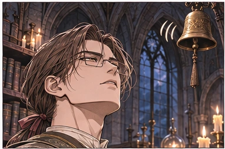
독일어 원문 · 한국어 번역
Laboratorium
WAGNER:
Die Glocke tönt, die fürchterliche,
Durchschauert die berußten Mauern.
Nicht länger kann das Ungewisse연구실 바그너: 벨이 울려요, 끔찍한 것, 그을음이 가득한 벽을 뚫고 보세요. 미지의 것은 더 이상 할 수 없다
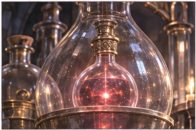
독일어 원문 · 한국어 번역
Der ernstesten Erwartung dauern.
Schon hellen sich die Finsternisse;
Schon in der innersten Phiole
Erglüht es wie lebendige Kohle,마지막으로 가장 심각한 기대입니다. 어둠은 이미 걷히고 있습니다. 이미 가장 안쪽의 유리병에 들어있습니다. 살아있는 석탄처럼 빛나고,
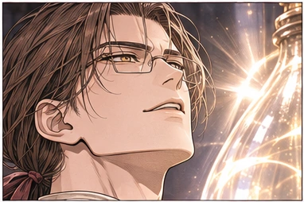
독일어 원문 · 한국어 번역
Ja wie der herrlichste Karfunkel,
Verstrahlend Blitze durch das Dunkel.
Ein helles weißes Licht erscheint!
O daß ich's diesmal nicht verliere!--예, 가장 멋진 카벙클처럼 어둠 속에서 번개를 발산합니다. 밝은 흰색 빛이 나타납니다! 아, 이번에는 잃지 않았으면 좋겠어!--
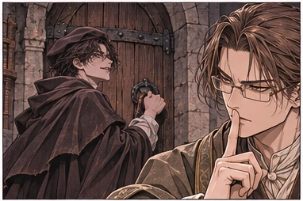
독일어 원문 · 한국어 번역
Ach Gott! was rasselt an der Türe?
MEPHISTOPHELES:
Willkommen! es ist gut gemeint.
WAGNER:
Willkommen zu dem Stern der Stunde!
Doch haltet Wort und Atem fest im Munde,오 맙소사! 문에서 덜거덕거리는 소리는 무엇입니까? 메피스토펠레스: 환영합니다! 그것은 좋은 의도입니다. 바그너: 이 시간의 스타에 오신 것을 환영합니다! 그러나 네 말과 호흡을 입에 굳게 지키라.
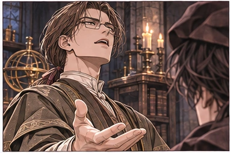
독일어 원문 · 한국어 번역
Ein herrlich Werk ist gleich zustand gebracht.
MEPHISTOPHELES:
Was gibt es denn? +
WAGNER:
Es wird ein Mensch gemacht.
MEPHISTOPHELES:
Ein Mensch? Und welch verliebtes Paar멋진 작품이 즉시 완성됩니다. 메피스토펠레스: 거기에 무엇이 있습니까? + 바그너: 인간이 만들어졌습니다. 메피스토펠레스: 인간? 그리고 사랑에 빠진 커플
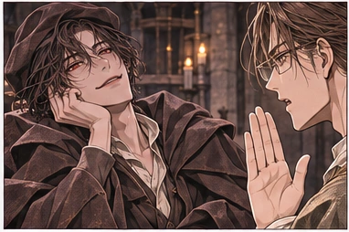
독일어 원문 · 한국어 번역
Habt ihr ins Rauchloch eingeschlossen?
WAGNER:
Behüte Gott! wie sonst das Zeugen Mode war,
Erklären wir für eitel Possen.
Der zarte Punkt, aus dem das Leben sprang,연기 구멍에 몸을 가두셨나요? 바그너: 신은 금지합니다! 그렇지 않으면 출산의 유행도 그랬고, 그들의 헛된 장난을 선언합시다. 생명이 싹튼 부드러운 지점,
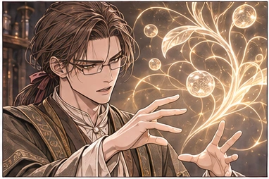
독일어 원문 · 한국어 번역
Die holde Kraft, die aus dem Innern drang
Und nahm und gab, bestimmt sich selbst zu zeichnen,
Erst Nächstes, dann sich Fremdes anzueignen,
Die ist von ihrer Würde nun entsetzt;내면에서 우러나온 달콤한 힘 그리고 자신을 그릴 운명을 취하고 주었고, 다음 먼저, 그 다음에는 외국 물건을 구입하고, 그녀는 이제 자신의 존엄성에 겁을 먹습니다.
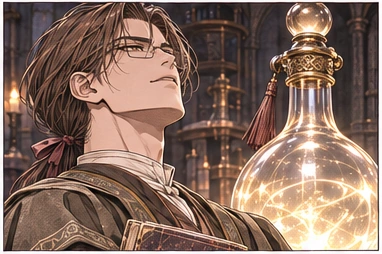
독일어 원문 · 한국어 번역
Wenn sich das Tier noch weiter dran ergetzt,
So muß der Mensch mit seinen großen Gaben
Doch künftig höhern, höhern Ursprung haben.
Es leuchtet! seht!--Nun läßt sich wirklich hoffen,동물이 계속해서 잔치를 벌인다면, 이것이 그의 큰 재능을 가진 사람이 해야 할 일이다 그러나 미래에는 더 높은 기원을 갖게 될 것입니다. 불이 켜집니다! 보세요!-이제 정말로 희망을 가질 수 있습니다.
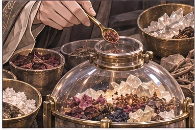
독일어 원문 · 한국어 번역
Daß, wenn wir aus viel hundert Stoffen
Durch Mischung--denn auf Mischung kommt es an--
Den Menschenstoff gemächlich komponieren,
In einen Kolben verlutieren만약 우리가 수백가지의 재료로 만들어졌다면 혼합함으로써 - 모든 것은 혼합에 관한 것이기 때문에 - 인간의 소재를 여유롭게 구성하고, 플라스크에 녹인다
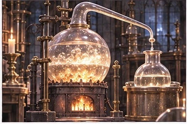
독일어 원문 · 한국어 번역
Und ihn gehörig kohobieren,
So ist das Werk im stillen abgetan.
Es wird! die Masse regt sich klarer!
Die überzeugung wahrer, wahrer:그리고 그와 제대로 동거를 하고, 그래서 그 일은 조용히 끝났다. 그럴 것이다! 군중이 더 명확하게 움직이고 있습니다! 사실, 사실에 대한 확신 :
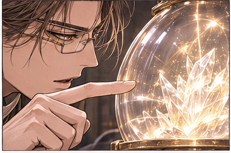
독일어 원문 · 한국어 번역
Was man an der Natur Geheimnisvolles pries,
Das wagen wir verständig zu probieren,
Und was sie sonst organisieren ließ,
Das lassen wir kristallisieren.자연이 신비롭다고 칭찬받은 것은 우리는 이것을 현명하게 시도해 보려고 합니다. 그리고 그녀가 정리한 다른 모든 것 우리는 그것이 결정화되도록 놔두었습니다.
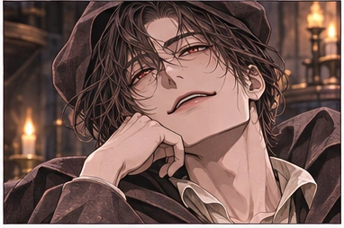
독일어 원문 · 한국어 번역
MEPHISTOPHELES:
Wer lange lebt, hat viel erfahren,
[Nichts Neues kann für ihn auf dieser Welt geschehn.
Ich habe schon in meinen Wanderjahren
Kristallisiertes Menschenvolk gesehn.메피스토펠레스: 오래 산 사람들은 많은 경험을 했을 것이다. [그에게는 이 세상에서 새로운 일이 일어날 수 없습니다. 나는 이미 하이킹을 하고 있다. 결정화된 인류가 보입니다.
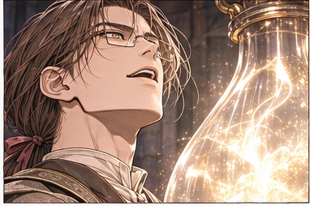
독일어 원문 · 한국어 번역
WAGNER:
Es steigt, es blitzt, es häuft sich an,
Im Augenblick ist es getan.
Ein großer Vorsatz scheint im Anfang toll;
Doch wollen wir des Zufalls künftig lachen,바그너: 솟아오르고, 번쩍이고, 쌓이고, 지금은 완료되었습니다. 훌륭한 결심은 처음에는 훌륭해 보입니다. 하지만 앞으로는 우연히 웃자.
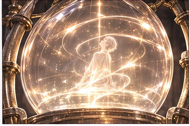
독일어 원문 · 한국어 번역
Und so ein Hirn, das trefflich denken soll,
Wird künftig auch ein Denker machen.
Das Glas erklingt von lieblicher Gewalt,
Es trübt, es klärt sich; also muß es werden!그리고 훌륭하게 생각해야 할 그런 두뇌, 사상가는 미래에도 이런 일을 할 것이다. 유리는 감미로운 폭력으로 울리고, 구름이 끼었다가 맑아졌습니다. 그래서 그래야만 해!
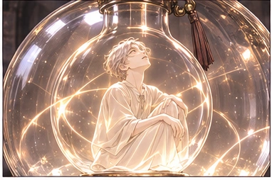
독일어 원문 · 한국어 번역
Ich seh' in zierlicher Gestalt
Ein artig Männlein sich gebärden.
Was wollen wir, was will die Welt nun mehr?
Denn das Geheimnis liegt am Tage.섬세한 모습으로 보여요 행동하기 좋은 작은 남자. 우리는 무엇을 원하는가, 세상은 지금 무엇을 더 원하는가? 비밀은 공개되어 있으니까요.
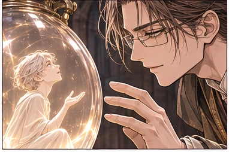
독일어 원문 · 한국어 번역
Gebt diesem Laute nur Gehör,
Er wird zur Stimme, wird zur Sprache.
HOMUNCULUS:
Nun Väterchen! wie steht's? es war kein Scherz.
Komm, drücke mich recht zärtlich an dein Herz!이 소리를 들어보세요. 그는 목소리가 되고, 언어가 됩니다. 호문쿨루스: 이제 아빠! 상황은 어때? 농담이 아니었어요. 자, 나를 당신의 마음에 부드럽게 눌러주세요!
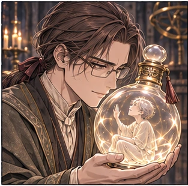
독일어 원문 · 한국어 번역
Doch nicht zu fest, damit das Glas nicht springe.
Das ist die Eigenschaft der Dinge:
Natürlichem genügt das Weltall kaum,
Was künstlich ist, verlangt geschloßnen Raum.하지만 유리가 깨지지 않도록 너무 꽉 조이지는 마세요. 이것은 사물의 속성입니다. 우주는 자연물을 수용하기에 충분하지 않습니다. 인공적인 것은 폐쇄된 공간을 필요로 한다.
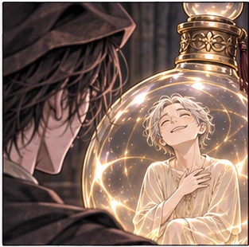
독일어 원문 · 한국어 번역
Du aber, Schalk, Herr Vetter, bist du hier
Im rechten Augenblick? ich danke dir.
Ein gut Geschick führt dich zu uns herein;
Dieweil ich bin, muß ich auch tätig sein.그런데 샬크 씨, 사촌 씨, 여기 계세요? 적절한 순간에? 감사합니다. 행운이 당신을 우리에게 데려옵니다. 내가 있는 동안 나는 또한 활동적이어야 한다.
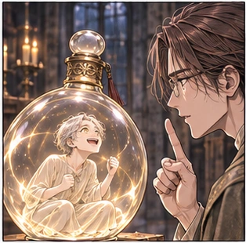
독일어 원문 · 한국어 번역
Ich möchte mich sogleich zur Arbeit schürzen.
Du bist gewandt, die Wege mir zu kürzen.
WAGNER:
Nur noch ein Wort! Bisher mußt' ich mich schämen,
Denn alt und jung bestürmt mich mit Problemen.당장 출근 앞치마를 입고 싶어요. 당신은 내 길을 단축하는 데 능숙합니다. 바그너: 한마디만 더! 지금까지 나는 부끄러워해야만 했다. 노소를 막론하고 나에게 문제를 안겨주기 때문입니다.
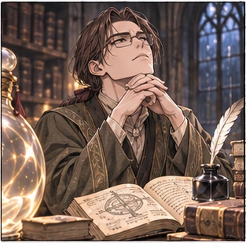
독일어 원문 · 한국어 번역
Zum Beispiel nur: noch niemand konnt' es fassen,
Wie Seel' und Leib so schön zusammenpassen,
So fest sich halten, als um nie zu scheiden,
Und doch den Tag sich immerfort verleiden.예를 들어, 아직 아무도 그것을 믿을 수 없었습니다. 영혼과 육체가 얼마나 아름답게 조화를 이루는지, 영원히 헤어지지 않을 것처럼 서로를 꼭 붙잡고, 그럼에도 불구하고 끊임없이 하루를 비참하게 만듭니다.
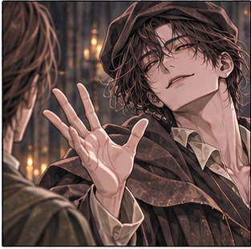
독일어 원문 · 한국어 번역
Sodann--+
MEPHISTOPHELES:
Halt ein! ich wollte lieber fragen:
Warum sich Mann und Frau so schlecht vertragen?
Du kommst, mein Freund, hierüber nie ins reine.그럼--+ 메피스토펠레스: 그만해! 나는 오히려 이렇게 묻고 싶습니다. 남자와 여자는 왜 그렇게 사이가 좋지 않습니까? 내 친구여, 당신은 결코 이것을 받아들이지 않을 것입니다.
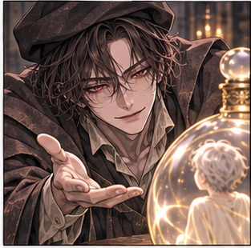
독일어 원문 · 한국어 번역
Hier gibt's zu tun, das eben will der Kleine.
HOMUNCULUS:
Was gibt's zu tun? +
MEPHISTOPHELES:
Hier zeige deine Gabe!
WAGNER:
Fürwahr, du bist ein allerliebster Knabe!여기서 할 일이 있습니다. 그것이 바로 어린 아이가 원하는 것입니다. 호문쿨루스: 할 일이 뭐 있어? + 메피스토펠레스: 여기에 선물을 보여주세요! 바그너: 정말로, 당신은 매우 사랑스러운 소년입니다!
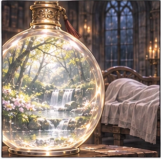
독일어 원문 · 한국어 번역
HOMUNCULUS:
Bedeutend!--+
Schön umgeben!--Klar Gewässer
Im dichten Haine! Fraun, die sich entkleiden,
Die allerliebsten!--Das wird immer besser.호문쿨루스: 중요해요!--+ 아름답게 둘러싸여 있습니다!--맑은 물 울창한 숲 속! 옷을 벗는 여자들 가장 사랑하는 이들이여!--그것은 점점 더 좋아지고 있습니다.
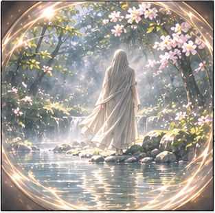
독일어 원문 · 한국어 번역
Doch eine läßt sich glänzend unterscheiden,
Aus höchstem Helden-, wohl aus Götterstamme.
Sie setzt den Fuß in das durchsichtige Helle;
Des edlen Körpers holde Lebensflamme하지만 한 가지 분명히 구별할 수 있는 것은, 영웅의 가장 높은 계열에서, 아마도 신의 계열에서. 그녀는 투명한 빛 속으로 발을 디딘다. 고귀한 몸의 아름다운 생명의 불꽃
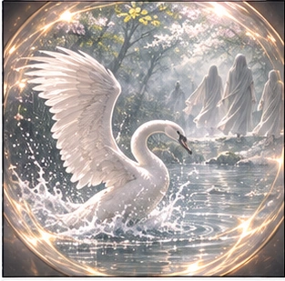
독일어 원문 · 한국어 번역
Kühlt sich im schmiegsamen Kristall der Welle.--
Doch welch Getöse rasch bewegter Flügel,
Welch Sausen, Plätschern wühlt im glatten Spiegel?
Die Mädchen fliehn verschüchtert; doch allein파도의 유연한 결정체로 식어라.-- 그러나 빠르게 움직이는 날개의 포효는, 매끄러운 거울 속에서는 어떤 윙윙거리고 튀는 소리가 들립니까? 소녀들은 겁에 질려 달아난다. 하지만 혼자
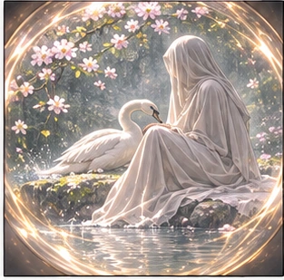
독일어 원문 · 한국어 번역
Die Königin, sie blickt gelassen drein
Und sieht mit stolzem weiblichem Vergnügen
Der Schwäne Fürsten ihrem Knie sich schmiegen,
Zudringlich-zahm. Er scheint sich zu gewöhnen.--여왕님, 차분해 보이시네요 그리고 자랑스러운 여성적 즐거움으로 보입니다. 백조의 왕자들이 그녀의 무릎 위에 자리잡고 있고, 방해적이고 길들입니다. 익숙해진 것 같습니다.--
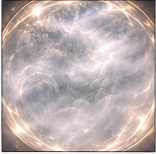
독일어 원문 · 한국어 번역
Auf einmal aber steigt ein Dunst empor
Und deckt mit dichtgewebtem Flor
Die lieblichste von allen Szenen.
MEPHISTOPHELES:
Was du nicht alles zu erzählen hast!그런데 갑자기 안개가 피어오른다. 그리고 촘촘하게 짜여진 파일로 덮어줍니다 모든 장면 중 가장 감미로운 장면. 메피스토펠레스: 말하지 않아도 알 수 있는 것!
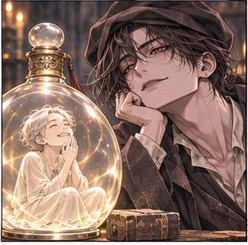
독일어 원문 · 한국어 번역
So klein du bist, so groß bist du Phantast.
Ich sehe nichts--+
HOMUNCULUS:
Das glaub' ich. Du aus Norden,
Im Nebelalter jung geworden,당신은 작지만 훌륭한 환상가입니다. 아무것도 안 보이는데--+ 호문쿨루스: 나는 그것을 믿는다. 북쪽에서 온 당신, 안개가 자욱한 시대에 젊어지고,
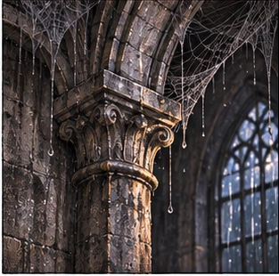
독일어 원문 · 한국어 번역
Im Wust von Rittertum und Pfäfferei,
Wo wäre da dein Auge frei!
Im Düstern bist du nur zu Hause.
Verbräunt Gestein, bemodert, widrig,기사도와 사제직의 혼란 속에서, 당신의 눈은 어디에서 자유로울 것인가! 당신은 어둠 속에서만 집에 있습니다. 갈색 바위, 썩은, 불리한,
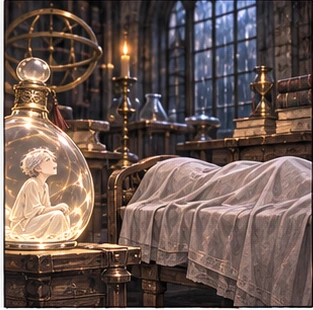
독일어 원문 · 한국어 번역
Spitzbögig, schnörkelhaftest, niedrig!--
Erwacht uns dieser, gibt es neue Not,
Er bleibt gleich auf der Stelle tot.
Waldquellen, Schwäne, nackte Schönen,뾰족하고, 구불구불하고, 낮습니다!-- 이것이 우리를 깨우면 새로운 문제가 생길 것입니다. 그는 즉시 죽습니다. 숲의 샘, 백조, 벌거벗은 미녀,
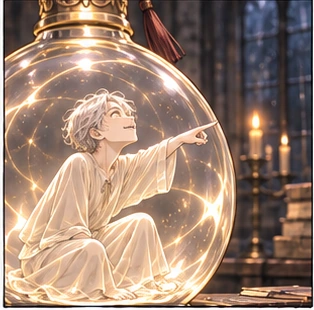
독일어 원문 · 한국어 번역
Das war sein ahnungsvoller Traum;
Wie wollt' er sich hierher gewöhnen!
Ich, der Bequemste, duld' es kaum.
Nun fort mit ihm! +그것은 그의 불길한 꿈이었습니다. 그는 여기에 익숙해지고 싶었습니다! 가장 편안한 나는 그것을 거의 용납하지 않습니다. 이제 그 사람과 함께 떠나세요! +
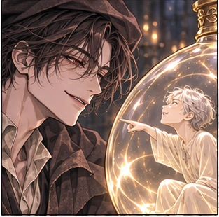
독일어 원문 · 한국어 번역
MEPHISTOPHELES:
Der Ausweg soll mich freuen.
HOMUNCULUS:
Befiehl den Krieger in die Schlacht,
Das Mädchen führe du zum Reihen,
So ist gleich alles abgemacht.메피스토펠레스: 나는 나가는 길에 대해 행복해야합니다. 호문쿨루스: 전사에게 전투를 명령하고, 당신은 그 소녀를 선으로 이끌고, 그래서 모든 것이 바로 해결됩니다.
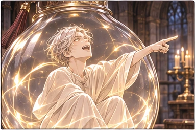
독일어 원문 · 한국어 번역
Jetzt eben, wie ich schnell bedacht,
Ist klassische Walpurgisnacht;
Das Beste, was begegnen könnte.
Bringt ihn zu seinem Elemente!이제 빨리 생각한 대로, 클래식인 Walpurgis Night입니다 만날 수 있는 최고의 것. 그를 그의 요소로 데려 오십시오!
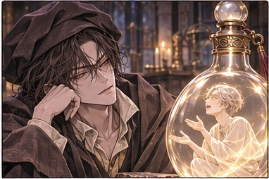
독일어 원문 · 한국어 번역
MEPHISTOPHELES:
Dergleichen hab' ich nie vernommen.
HOMUNCULUS:
Wie wollt' es auch zu euren Ohren kommen?
Romantische Gespenster kennt ihr nur allein;
Ein echt Gespenst, auch klassisch hat's zu sein.메피스토펠레스: 나는 그런 말을 들어 본 적이 없습니다. 호문쿨루스: 그게 어떻게 당신의 귀에 닿을 수 있었나요? 당신은 낭만적인 유령만을 알고 있습니다. 진짜 유령은 클래식해야 합니다.
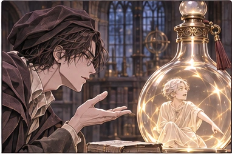
독일어 원문 · 한국어 번역
MEPHISTOPHELES:
Wohin denn aber soll die Fahrt sich regen?
Mich widern schon antikische Kollegen.
HOMUNCULUS:
Nordwestlich, Satan, ist dein Lustrevier,
Südöstlich diesmal aber segeln wir--메피스토펠레스: 그런데 여행은 어디로 가야 할까요? 골동품 동료들은 나를 혐오합니다. 호문쿨루스: 북서부, 사탄은 당신의 즐거움의 영역입니다. 하지만 이번에는 남동쪽으로 항해하고 있습니다.
독일어 원문 · 한국어 번역
An großer Fläche fließt Peneios frei,
Umbuscht, umbaumt, in still--und feuchten Buchten;
Die Ebne dehnt sich zu der Berge Schluchten,
Und oben liegt Pharsalus, alt und neu.페네이오스는 넓은 지역을 자유롭게 흐르며, 덤불로 둘러싸여 있고, 나무로 둘러싸여 있으며, 조용하고 습한 만에 있습니다. 평원은 산골짜기까지 뻗어 있고, 그리고 그 위에는 낡고 새로운 파르살로스(Pharsalus)가 놓여 있습니다.
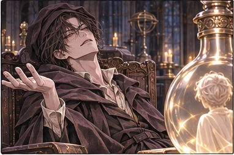
독일어 원문 · 한국어 번역
MEPHISTOPHELES:
O weh! hinweg! und laßt mir jene Streite
Von Tyrannei und Sklaverei beiseite.
Mich langeweilt's; denn kaum ist's abgetan,
So fangen sie von vorne wieder an;메피스토펠레스: 아 이런! 다 쓴! 그리고 그 분쟁은 나에게 맡겨 폭정과 노예 제도는 제쳐두고. 나는 지루하다; 이제 거의 끝나지 않았기 때문에 그래서 그들은 다시 시작합니다.
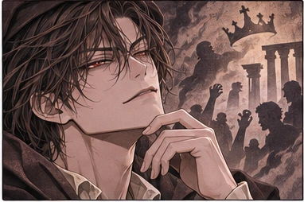
독일어 원문 · 한국어 번역
Und keiner merkt: er ist doch nur geneckt
Vom Asmodeus, der dahinter steckt.
Sie streiten sich, so heißt's, um Freiheitsrechte;
Genau besehn, sind's Knechte gegen Knechte.그리고 아무도 눈치채지 못합니다. 그는 단지 놀림을 받고 있을 뿐입니다. 그 배후에 있는 아스모데우스에 대해서. 그들은 시민의 자유에 관해 논쟁을 벌이고 있다고 합니다. 자세히 보면 하인과 하인의 대결이다.
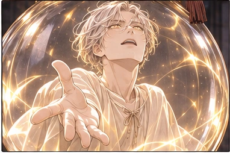
독일어 원문 · 한국어 번역
HOMUNCULUS:
Den Menschen laß ihr widerspenstig Wesen,
Ein jeder muß sich wehren, wie er kann,
Vom Knaben auf, so wird's zuletzt ein Mann.
Hier fragt sich's nur, wie dieser kann genesen.호문쿨루스: 사람들이 완고해지자, 모두가 최선을 다해 자신을 방어해야 합니다. 소년에서 드디어 남자가 된다. 여기서 유일한 질문은 그가 어떻게 회복할 수 있느냐는 것입니다.
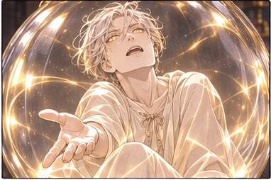
독일어 원문 · 한국어 번역
Hast du ein Mittel, so erprob' es hier,
Vermagst du's nicht, so überlaß es mir.
MEPHISTOPHELES:
Manch Brockenstückchen wäre durchzuproben,
Doch Heidenriegel find' ich vorgeschoben.해결 방법이 있다면 여기에서 시도해 보세요. 할 수 없다면 나에게 맡겨주세요. 메피스토펠레스: 일부 부분은 연습을 해야 할 것입니다. 하지만 하이덴리겔은 변명이라고 생각합니다.
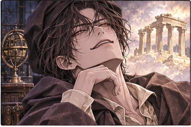
독일어 원문 · 한국어 번역
Das Griechenvolk, es taugte nie recht viel!
Doch blendet's euch mit freiem Sinnenspiel,
Verlockt des Menschen Brust zu heitern Sünden;
Die unsern wird man immer düster finden.그리스 사람들은 결코 선한 사람이 아니었습니다! 하지만 그것은 감각의 자유로운 유희로 인해 당신의 눈을 멀게 합니다. 죄를 격려하기 위해 사람의 가슴을 유혹합니다. 우리의 삶은 항상 우울할 것입니다.
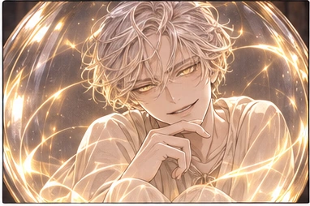
독일어 원문 · 한국어 번역
Und nun, was soll's? +
HOMUNCULUS:
Du bist ja sonst nicht blöde;
Und wenn ich von thessalischen Hexen rede,
So denk' ich, hab' ich was gesagt.이제 요점이 무엇입니까? + 호문쿨루스: 그렇지 않으면 당신은 바보가 아닙니다. 그리고 제가 테살리아 마녀에 관해 이야기할 때, 그래서 제가 무슨 말을 한 것 같아요.
독일어 원문 · 한국어 번역
MEPHISTOPHELES:
Thessalische Hexen! Wohl! das sind Personen,
Nach denen hab' ich lang' gefragt.
Mit ihnen Nacht für Nacht zu wohnen,
Ich glaube nicht, daß es behagt;메피스토펠레스: 테살리아 마녀들! 아마! 이들은 사람들이다 나는 오랫동안 그들에 대해 물어 왔습니다. 밤마다 그들과 함께 살기 위해, 나는 그것이 편안하다고 생각하지 않습니다.
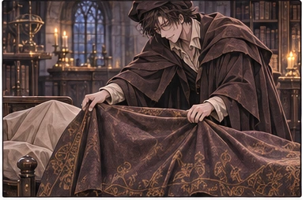
독일어 원문 · 한국어 번역
Doch zum Besuch, Versuch--+
HOMUNCULUS:
Den Mantel her,
Und um den Ritter umgeschlagen!
Der Lappen wird euch, wie bisher,하지만 방문하려면 시도해보세요--+ 호문쿨루스: 코트를 가져오세요, 그리고 기사를 쓰러뜨렸어요! 걸레는 이전과 마찬가지로 당신에게 줄 것입니다.
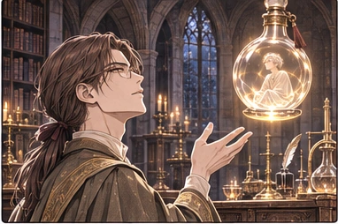
독일어 원문 · 한국어 번역
Den einen mit dem andern tragen;
Ich leuchte vor. +
WAGNER:
Und ich? +
HOMUNCULUS:
Eh nun,하나를 다른 하나와 함께 운반; 나는 앞으로 빛나고 있다. + 바그너: 그리고 나는요? + 호문쿨루스: 어 지금,
독일어 원문 · 한국어 번역
Du bleibst zu Hause, Wichtigstes zu tun.
Entfalte du die alten Pergamente,
Nach Vorschrift sammle Lebenselemente
Und füge sie mit Vorsicht eins ans andre.당신은 가장 중요한 일을 하기 위해 집에 있습니다. 당신은 낡은 양피지를 펼치고, 지시에 따라 생활 요소를 수집하세요 그리고 조심해서 하나씩 추가하세요.
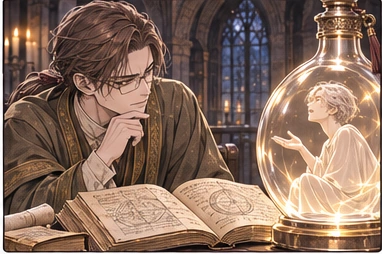
독일어 원문 · 한국어 번역
Das Was bedenke, mehr bedenke Wie.
Indessen ich ein Stückchen Welt durchwandre,
Entdeck' ich wohl das Tüpfchen auf das i.
Dann ist der große Zweck erreicht;무엇을 고려하고, 방법을 더 고려하십시오. 세상의 작은 조각을 헤매는 동안, 아무래도 케이크의 아이싱을 발견한 것 같아요. 그러면 위대한 목적이 달성됩니다.
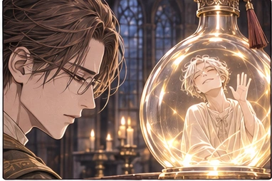
독일어 원문 · 한국어 번역
Solch einen Lohn verdient ein solches Streben:
Gold, Ehre, Ruhm, gesundes langes Leben,
Und Wissenschaft und Tugend--auch vielleicht.
Leb wohl! +그러한 추구는 그러한 보상을 받을 자격이 있습니다. 금, 명예, 명예, 건강장수, 그리고 과학과 미덕도 아마도 그럴 것입니다. 작별! +
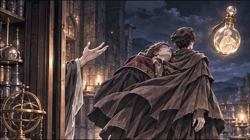
독일어 원문 · 한국어 번역
WAGNER:
Leb wohl! Das drückt das Herz mir nieder.
Ich fürchte schon, ich seh' dich niemals wieder.
MEPHISTOPHELES:
Nun zum Peneios frisch hinab!바그너: 작별 인사! 이것이 내 마음을 무겁게 한다. 다시는 당신을 볼 수 없을까 두렵습니다. 메피스토펠레스: 이제 페네이오스프레시로 내려가세요!
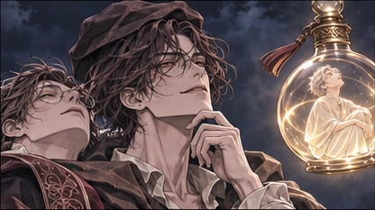
독일어 원문 · 한국어 번역
Herr Vetter ist nicht zu verachten.
Am Ende hängen wir doch ab
Von Kreaturen, die wir machten.
베터 씨는 멸시받아서는 안 됩니다. 결국 우리는 어울려 우리가 만든 생물.